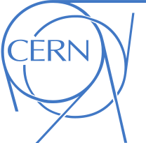
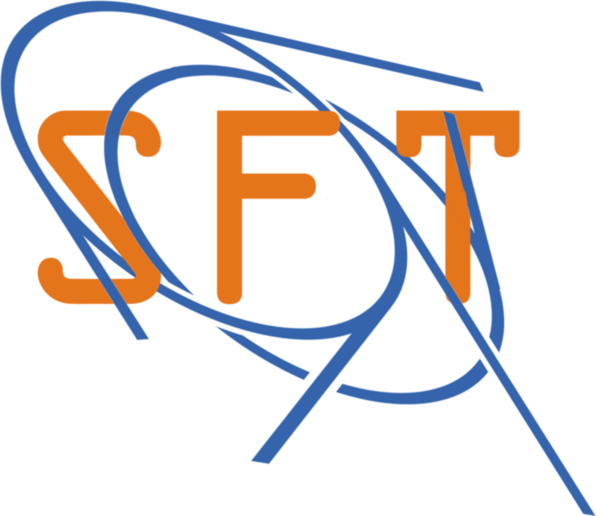

PicoCal Autoencoder
Ali Javani
2025-03-09
PicoCal Autoencoder Optimization
Presenter: Ali Javani
Supervisers: Dr. Vladimir Loncar • Prof. Eluned Smith
Co-Supervisors: Dr. Julian Garcia Pardinas • Dr. Katya Govorkova



Interactive Plotly
Project overview
The model compresses and reconstructs the pulses measured in the PicoCal calorimeter. Each pulse is normally stored as 32 samples (already downsampled from a longer waveform). Transmitting and saving all of this is challenging because the detector will record millions of pulses per second.
Our autoencoder takes each 32-point pulse and compresses it to a 2-dimensional latent. These two numbers capture key features (size, shape, timing). The encoder runs on-detector so only the compressed representation is transmitted; the decoder reconstructs the full 32-sample pulse downstream.
Compared with simpler methods that keep only a timestamp, this preserves much more information about the pulse shape, improving:
- Time reconstruction: precise hit timing.
- Energy calibration: mapping the wave amplitude to deposited energy.
- Pile-up mitigation: separating overlapping signals.
What is an Autoencoder?
An autoencoder learns a compact representation (encoder) and a reconstruction (decoder).
Our baseline: 32 → 2 → 32 (encoder → bottleneck → decoder). The encoder is the on-detector component; the decoder is offline.
So, the bottleneck would retain most of the information

Data used for training
Training and testing data come from a detailed simulation of the PicoCal electromagnetic calorimeter, including the detector geometry, materials, and readout electronics, so simulated pulses resemble those expected during LHCb data-taking.
We generate two pulse types and then mix them to mimic realistic running conditions:
- Signal pulses: single photons, 0.5–5 GeV, produced near the interaction point.
- Background pulses: extra detector activity (for example: pile-up, underlying event).
Each pulse is first simulated with 1024 samples (as in the actual test-beam digitizer). The detector will use a different digitizer with 32 samples, so we downsample 1024→32 to match. This preserves overall shape but not exact timing.
Current status (work done so far)
- A baseline autoencoder is trained.
- An hls4ml implementation exists for hardware deployment of the encoder.
What I am going to do
Optimize the model via quantization, focusing on the encoder.
Why we need quantize?
- Smaller & cheaper: fewer bits → less memory and bandwidth per pulse.
- Faster & lower latency: integer arithmetic is hardware-friendly.
- Lower power: critical for on-detector operation.
- Robustness: with QAT, accuracy can match (or sometimes slightly improve vs. FP) due to regularization.
- Smaller output payload: compressed latent uses fewer bits per value.
Quantization options (summary)
| Strategy | What it does | Accuracy hit | Speed/Memory win | Typical use cases |
|---|---|---|---|---|
| PTQ (static) | Calibrate on a small dataset; bake fixed scales/zero-points. | Low→moderate (good at 8-bit; riskier ≤4-bit) | 3–4× smaller; fast INT kernels | Quick CPU/GPU/TPU deploy when retraining is hard. |
| PTQ (dynamic) | Weights quantized; activation scales computed at inference. | Similar to static at 8-bit; worse ≤4-bit | Memory win; smaller speedup | NLP on CPUs; no calibration set available. |
| QAT | Train with fake-quant (STE) so model learns quant noise. | Best (works down to 4/2-bit; even ternary) | Runtime like PTQ; higher train cost | Edge/FPGA/ASIC; tight accuracy budgets. |
| WOQ | Weight-only (e.g., 4-bit); activations FP8/16. | Small→moderate | Big memory/BW savings | Large LLM/CV on GPUs where memory is the bottleneck. |
| Mixed-precision | Per-layer/per-tensor bit-widths. | Near-float if tuned | Best Pareto trade-off | FPGAs/ASICs (QKeras+hls4ml), mobile SoCs. |
Our plan: Mixed-precision QAT for the encoder. (using QKeras + hls4ml)
QKeras + hls4ml
QKeras is a drop-in extension of Keras that lets you assign per-layer (heterogeneous) quantization to weights, activations, and batch-norm parameters and train the model quantization-aware. Combined with hls4ml, quantized networks are compiled to FPGA firmware for O(10) ns inference.
Why I’m not using AutoQKeras
AutoQKeras (auto search over bit-widths based on estimated energy or model bit size + accuracy) was not used due to:
- Sparse docs/API; heavy implicit behavior.
- Minimal result summaries and limited reliability for our workflow.
- No built-in K-Fold support;
- limited parallelism beyond default Keras options (except Trial parallelism, Data parallelism only suitable for multiple GPUs)
Environment constraints (what currently works)
- QKeras works reliably with
Python 3.10+TensorFlow 2.14+Keras 2.xin our tests. - Keras v3 APIs are not compatible (errors encountered). There are signs of in-progress support, but it is not usable in our setup yet and updates are so rare.
- CUDA/driver combinations: in practice, the project failed with some versions (e.g., ~560, ~580) and ran with an intermediate one (~570) but again, in theory it should be compatible with 570 ≤.
- Although some guides suggest
TF 2.15(Keras 2.15) orTF ≥ 2.16withtf-kerasandTF_USE_LEGACY_KERAS=1, this did not work in our experiments. We therefore stuck toPython 3.10+TF 2.14.
Note: I plan to create a short notebook/markdown guide for a reproducible QKeras setup (including CERN cluster tips), given the current documentation gaps and the fact that it took a lot of time on setting up a working environment for me.
Quantization work so far — issues and fixes
Wrong baseline comparison (fixed)
Initially, the quantized model was asked to reconstruct unquantized inputs; this implicitly asks it to “undo” input quantization too.
TODO: show the previous code for quantized model and focus on the line with activation before the model
Fix: Quantize the inputs (data) prior to training so both models see consistent quantization.
“dying ReLU” diagnosis (fixed)
Intermittent failures (~1/3 runs).
Even after fixing the inputs, about one-third of runs failed to learn. Inspection of weights and biases showed nothing obviously wrong, yet parameter updates were tiny or stagnant across batches/epochs. Probing intermediate layer outputs revealed the network was producing near-constant outputs, and, crucially, the encoder ReLU had a very high (sometimes ~100%) probability of outputting zero on one or both latent units.
Root cause: ReLU + tiny bottleneck → dead units.
With an activation that has an asymmetric output (ReLU = zero for all negative pre-activations) and a bottleneck with very few neurons (latent=2), the model often explores zero outputs early—before the optimizer is “calibrated.” Once a ReLU unit is stuck at zero, its gradient is zero and it cannot recover. This is the dying ReLU problem: ReLU neurons become permanently inactive, outputting zero for all inputs and blocking learning.
- See: Against Dead ReLU (internal note): https://www.notion.so/Against-Dead-Relu-262d089371c98046ae45ddd100d6a2ec?pvs=21
Mitigations explored (and what actually worked).
- Initialization: Use He (Kaiming) initialization instead of Xavier for rectifiers. [1]
- Normalization: Some papers suggest placing Batch Normalization immediately before the activation (notably in larger models) to stabilize pre-activations. [2]
- Activation variants: Many works propose ReLU extensions (e.g., Leaky ReLU / PReLU / RReLU) that keep a non-zero slope on the negative side, both mitigating dead units and sometimes improving accuracy.
- Regularization for quantization robustness: One paper recommends L2 regularization in quantization-friendly designs for large models—shrinking weight ranges to reduce quantization error, which in turn lowers the chance of saturating activations and killing neurons: [3]
- Learning rate: A large LR increases the chance of pushing units into the zero region. I tuned the LR, added warmup, and experimented with restarts; these helped but did not fully resolve the issue.
Outcome.
The only change that consistently fixed the problem was replacing ReLU with Leaky ReLU in the encoder bottleneck. Other mitigations (He init, BN placement, L2, LR schedules) did not noticeably alleviate the issue in our small model, likely because many of those results are demonstrated on larger architectures.
Operational safeguard.
I also implemented a callback to detect dying behavior (monitoring zero-output ratio and learning stalls) and to reinitialize. However, reinitializing layers/activations/callbacks/epochs mid-training made the code overly complex. Instead, I adopted a simpler restart policy triggered by high validation loss, which works well in practice.
(Slide note: include a small example where training stops due to near-zero latent outputs.)
Variance across runs and K-Fold cross-validation
The std of the minimum validation loss was high (≈ half the mean). To obtain a more stable estimate:
- Used K-Fold CV (K=10) to report an average with variance.
- Sequential training became slow; tried multiprocessing with shared GPU but ran into errors.
- Switched to a clearer approach using
subprocess.Popento launch independent training processes, reschedule failures, and keep the parallelism logic outside the training code.
(Include a small subprocess.Popen snippet on the slide if you want to show the launch pattern.)
What to optimize next (and why)
- # encoder layers: adding encoder depth doubles on-detector latency; avoid unless justified.
- # decoder layers: can be increased (offline) to improve reconstruction and better expose the bottleneck capacity.
- Quantizing encoder weights/biases: evaluate experimentally (likely symmetric per-channel weights; higher-precision biases).
- Quantizing encoder output activation: evaluate carefully (see §13).
- Latent dimensionality: we tested 2→5 for insight; spec requires 2, so we will stick to 2.
Parameter ranges and early experiments
- Weights/biases: observed magnitudes are small; integer bits 0–2 seem sufficient. With 10–15 fractional bits, quantization error is well below the model’s validation loss per parameter.
add the based model results
- Activations Outputs: much wider dynamic range; they need more integer bits, making them harder to quantize aggressively.
add outputs
Experiments:
- Quantizing only the encoder output activation gave inconsistent results (sensitive/random).
add outputs
- Keeping that activation unquantized, we scanned latent sizes 2–5: moving from 2 → 3 latents improved accuracy by ~4× with ~1.5× model/energy cost, but spec confines us to 2 latents (post-review), and gains from 3→4→5 were not compelling.
add outputs
Across runs, integer-bit = 0 (i.e., all fractional) often performed best for weights/biases, matching the observed small dynamic range.
Key observation: Although run-to-run variance is high, train and validation losses closely track, especially at the end. The decoder has ~2 KB of parameters vs. ~100 MB of data, so the model capacity is too small to overfit; low MSE loss typically reflects genuine difficulty, not overfitting.
add outputs
Implication for production: choose a reasonable configuration and rerun with new initializations until the desired metric is achieved. Under this regime, we can also quantize the encoder activation more aggressively.
Recommendations to the new QKeras replacing of CERN (developer feedback)
- Add LeakyReLU-family activations support; they help both small and large models and drastically reduce dead-unit risk.
- Prefer explicit over implicit implementation behavior and make implicit functionalities like auto quantization one top of them.
- Move away from string-based quantizer specs; adopt Pythonic APIs (with deprecation warnings).
- Consider drop-in PyTorch-layer equivalents for broader adoption.
References
[1]
K. He, X. Zhang, S. Ren, and J. Sun, “Delving deep into rectifiers: Surpassing human-level performance on ImageNet classification.” 2015. Available: https://arxiv.org/abs/1502.01852
[2]
S. Ioffe and C. Szegedy, “Batch normalization: Accelerating deep network training by reducing internal covariate shift,” CoRR, vol. abs/1502.03167, 2015, Available: http://arxiv.org/abs/1502.03167
[3]
T. Sheng, C. Feng, S. Zhuo, X. Zhang, L. Shen, and M. Aleksic, “A quantization-friendly separable convolution for MobileNets,” in 2018 1st workshop on energy efficient machine learning and cognitive computing for embedded applications (EMC2), IEEE, Mar. 2018. doi: 10.1109/emc2.2018.00011.

Ali Javani - Summer Student 2025 - PicoCal Autoencoder Optimization - 03.09.2025